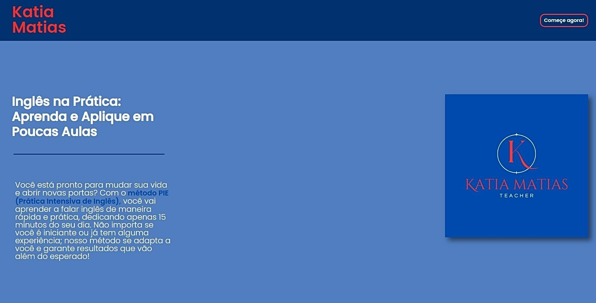
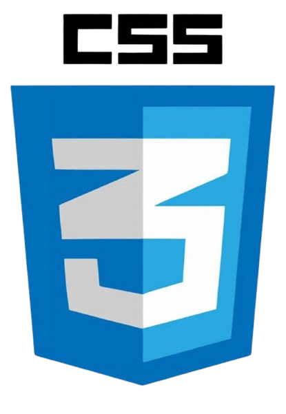
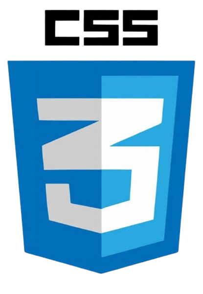
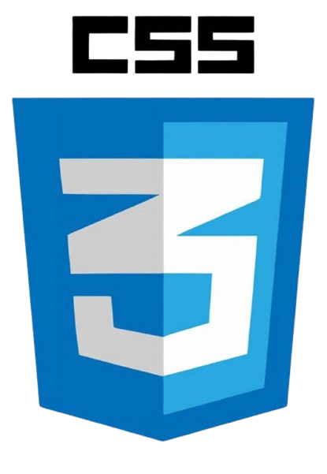
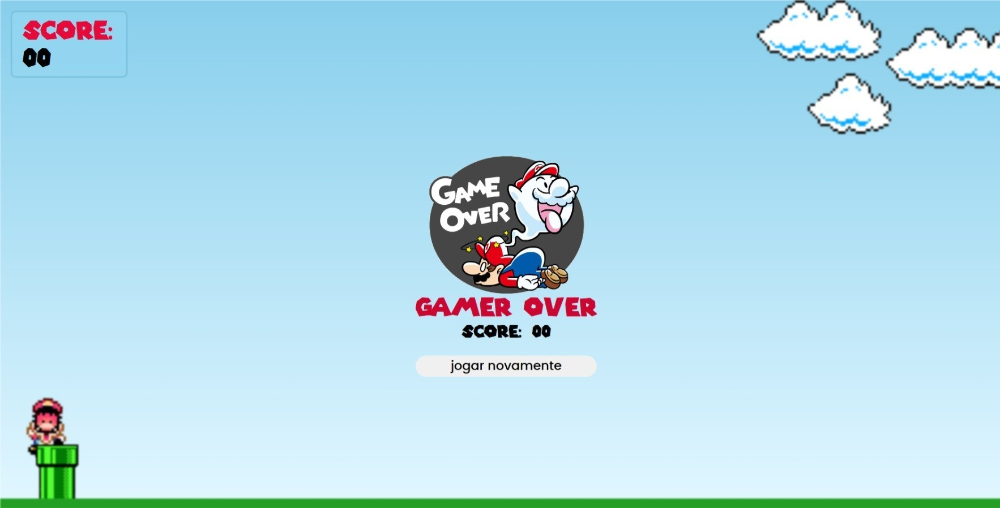
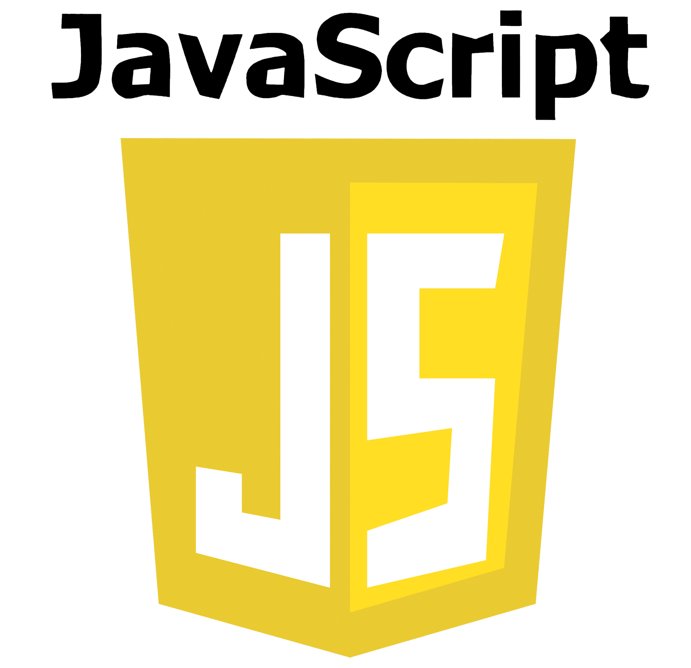
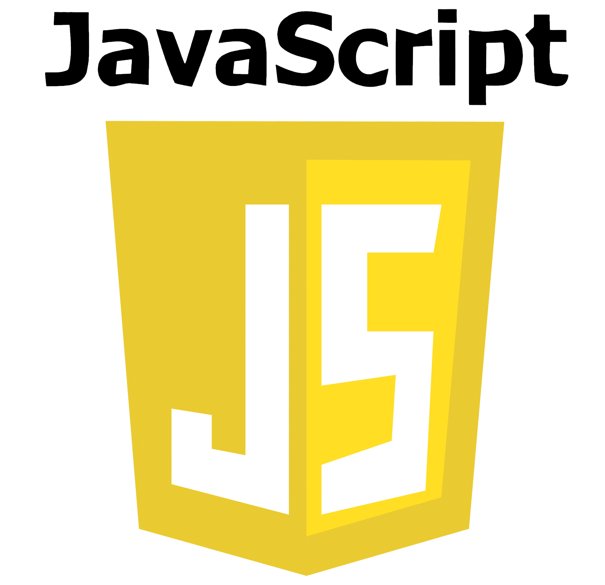

Meus projetos

 

Lading page
Landing page simples com design responsivo e com botão funcional para um curso de inglês.



Joguinho do Mario
Jogo simples de pular do Mario bros (em desenvolvimento).
